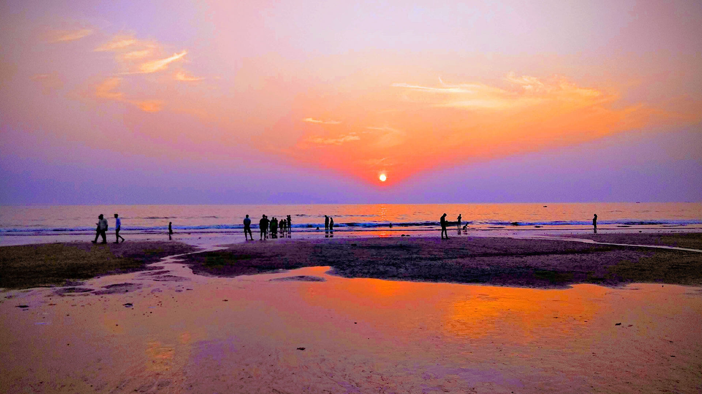
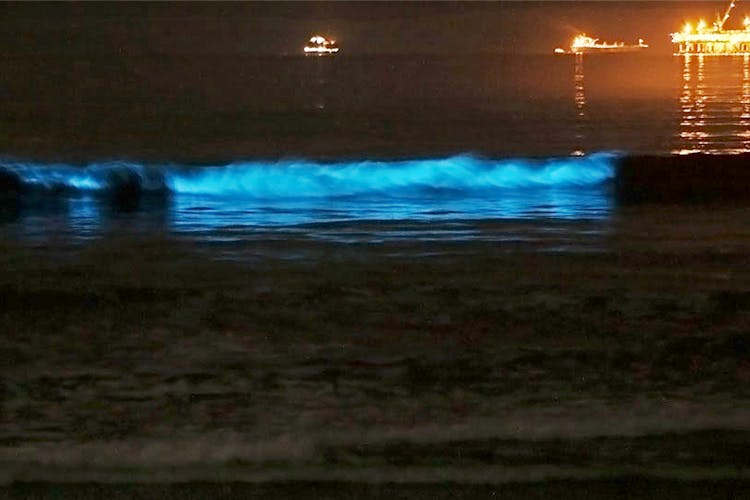
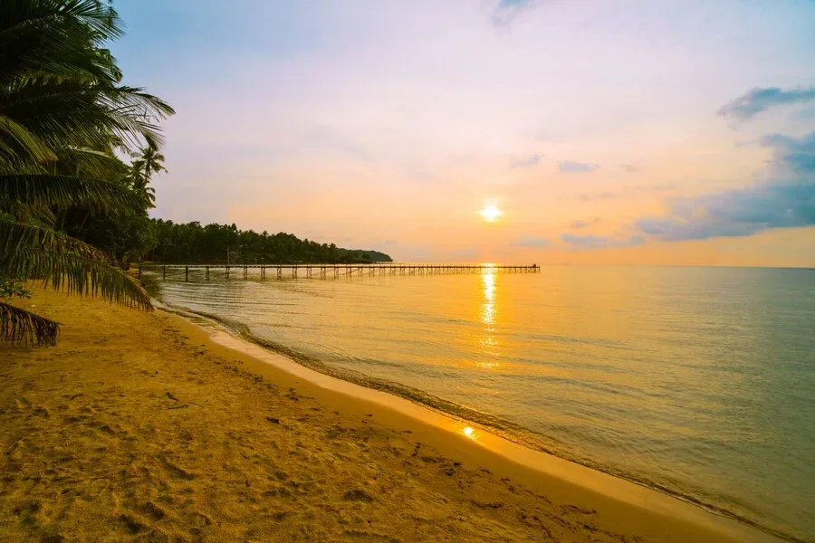
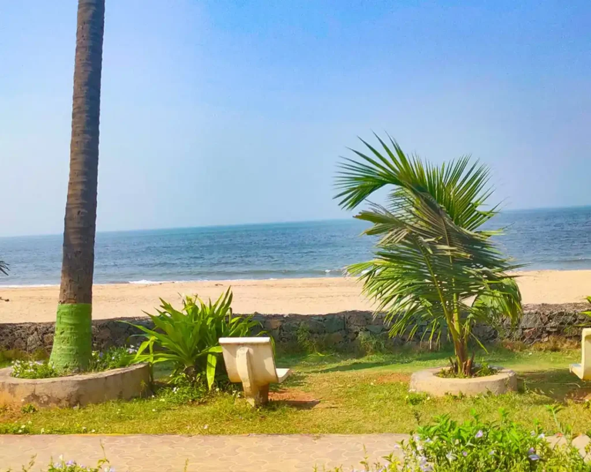

Juhu Beach




🏖️ Introduction
Juhu Beach is one of Mumbai’s most popular seaside destinations, known for its sandy shores, lively atmosphere, and iconic street food. It’s a favorite spot for locals and tourists alike.
📜 History
Located in the western suburbs, Juhu Beach has been a public attraction since the 19th century. It’s surrounded by luxurious homes of Bollywood celebrities and is a hub of social activity.
🕒 Best Time to Visit
- Evening for sunset views
- October to March for pleasant weather
🍢 Things to Do
- Enjoy Mumbai street food like bhel puri and pav bhaji
- Watch sunset with sea breeze
- Horse and camel rides
- Relax with friends and family